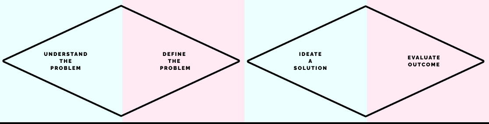

Odyssey2.0 is a MIS for the printing industry that includes CRM and Marketing Automation. Its goal is to be a trustworthy all-in automator, a place where printer can find anything important for them and the printshop: order management, automated workflows calculating resources and cost, after sale continuos customer relationship, marketing aids, among others.
I joined the product as the first UX Designer on the team, alas a generalist designer. Soon, because fo the impact of our efforts we received more investment, the team grew and I became the UX Lead of a small team of designers.
The things I’m learning the more in this project are:
- Information architecture
- Wireframing
- Research
- Testing
Problem
I entered the project right after it reached the MVP, it was a functioning app with a few subscribers. But, it had a problem: the users hated the experience! The company was struggling on gaining subscribers and they were losing the few they had at an alarming pace.
Odyssey2.0 was designed and developed as a robust and technical app that required a certain amount of expertise in the printing industry to use it. Our users have all kinds of different backgrounds, printing knowledge and experience. We needed to unravel complexity into clarity.
Solution
By understanding and finding patterns in the existing mental models from our users, we designed an interface that feels familiar and intuitive (Jakob’s Law). We unraveled the complexity and the technicality of the industry concepts leaning on visual aid and dividing it in understandable and easy steps, letting unexperienced users get familiar with the concepts, and allowing customization to more experienced ones. We designed an onboarding tool to help users understand the application, familiarize themselves with the different processes and decide on what level of expertise they want to work on.
70%
Conversion rate on the onboarding.
📉🎉
Decrease the churn rate from 25% to 5% monthly.
Process
As I worked in an Agile environment, I needed a framework that allowed us to constantly track our progress with the product's goals and that let constant and healthy iteration. We use Design Thinking as a foundation of our design process, but we make it our own,
Research
Doing a continuos research allowed us to always be aware of the current experience of our users and to understand
Wireframing
Doing a continuos research allowed us to always be aware of the current experience of our users and to understand
Prototyping
Doing a continuos research allowed us to always be aware of the current experience of our users and to understand
Evaulating outcomes
Doing a continuos research allowed us to always be aware of the current experience of our users and to understand